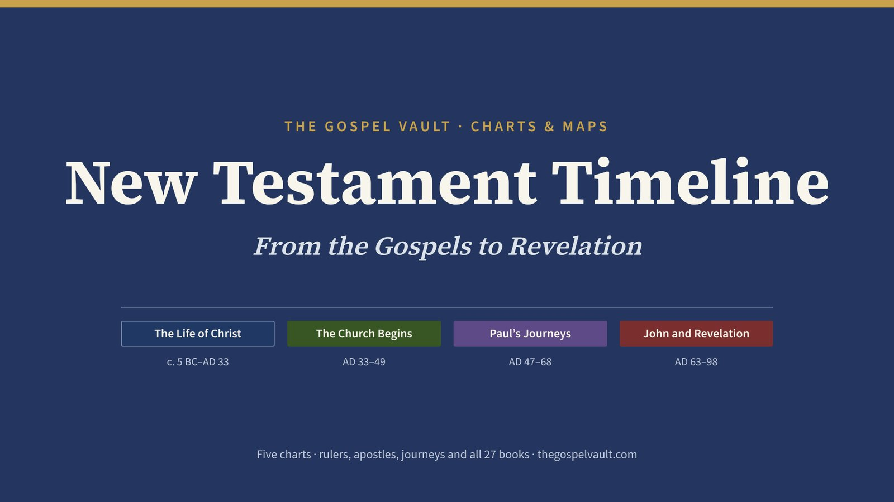

Studies, Charts & Maps

Charts · 5 TimelinesNew Testament Timeline
Rulers, apostles, Paul’s journeys and all 27 books on one timeline, from the births of John and Jesus to Revelation.
 Papyrus 46 · about AD 200The oldest surviving collection of Paul’s letters. This page holds the opening of Galatians, copied about 150 years after Paul.
16-Part Series
Papyrus 46 · about AD 200The oldest surviving collection of Paul’s letters. This page holds the opening of Galatians, copied about 150 years after Paul.
16-Part Series
Galatians
A study on the freedom found in Christ and the danger of adding anything to the gospel of grace — worked out one passage at a time.
 Papyrus 46 · about AD 200Two leaves of the oldest collection of Paul’s letters, now in Dublin, holding the end of Philippians and the opening of Colossians.
12-Part Series
Papyrus 46 · about AD 200Two leaves of the oldest collection of Paul’s letters, now in Dublin, holding the end of Philippians and the opening of Colossians.
12-Part Series
Colossians
Christ Is All — a letter against a teaching that said Jesus was not enough, showing Christ supreme and believers complete in Him — worked out one passage at a time.
 The Politarch InscriptionFrom Thessaloniki’s city gate, now in the British Museum. It confirms “politarchs,” the rare title Luke gives the city’s rulers in Acts 17:6.
10-Part Series
The Politarch InscriptionFrom Thessaloniki’s city gate, now in the British Museum. It confirms “politarchs,” the rare title Luke gives the city’s rulers in Acts 17:6.
10-Part Series
1 Thessalonians
Paul's first letter to a young, afflicted church — faith, love, hope, and a certain hope of Christ's return, worked out one passage at a time.
 Roman Forum of ThessalonikiThe city’s public heart, built over the marketplace of Paul’s day, where this young church stood firm under pressure (Acts 17:5–9).
7-Part Series
Roman Forum of ThessalonikiThe city’s public heart, built over the marketplace of Paul’s day, where this young church stood firm under pressure (Acts 17:5–9).
7-Part Series
2 Thessalonians
A follow-up letter steadying a church confused about the day of the Lord, with a call to faithful, unwavering work in the meantime — worked out one passage at a time.
 Papyrus 87 · AD 200sThe oldest surviving copy of Philemon, now in Cologne. Its lines come from verses 13–15: “my chains for the gospel … without your consent I wanted to do nothing.”
3-Part Series
Papyrus 87 · AD 200sThe oldest surviving copy of Philemon, now in Cologne. Its lines come from verses 13–15: “my chains for the gospel … without your consent I wanted to do nothing.”
3-Part Series
Philemon
Paul's shortest letter: a runaway slave, a wronged master, and an appeal for love's sake — "receive him as you would me" — worked out one passage at a time.
 Papyrus 78 · AD 200s–300sA tiny fragment of Jude from Oxyrhynchus, Egypt, now in Oxford. It preserves words from Jude 4–8, including the warning about those who “deny our only Master.”
6-Part Series
Papyrus 78 · AD 200s–300sA tiny fragment of Jude from Oxyrhynchus, Egypt, now in Oxford. It preserves words from Jude 4–8, including the warning about those who “deny our only Master.”
6-Part Series
Jude
A short, urgent letter on contending for the faith once for all handed down — and trusting the God who is able to keep you from stumbling, worked out one passage at a time.
Photos: Papyrus 46, University of Michigan (public domain); Papyrus 46, Chester Beatty Library, Dublin (public domain); Politarch inscription (public domain); Roman Forum of Thessaloniki by Magda Mortisia, CC BY-SA 4.0, via Wikimedia Commons; Papyrus 87, University of Cologne (public domain); Papyrus 78, Sackler Library, Oxford (public domain).